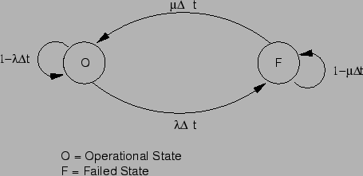
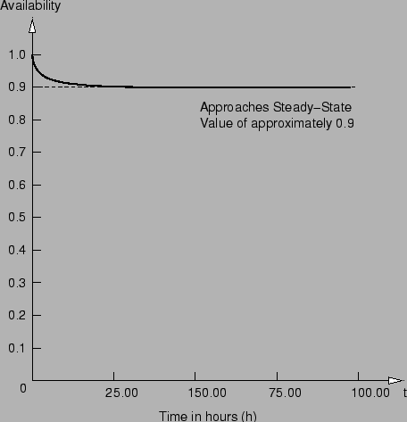

Next: แบบจำลองความสามารถในการบำรุงรักษา
Up: แบบจำลองความสามารถในการคงการบริการ
Previous: แบบจำลองความสามารถในการคงการบริการ
Contents
Index
พิจารณาระบบคอมพิวเตอร์ที่เกิดหนึ่งความเสียหายในทุก 100 ชั่วโมง และอัตราการซ่อมบำรุงเท่ากับ หนึ่งการซ่อมต่อสิบชั่วโมง ให้คำนวณค่าความสามารถในการคงการบริการของระบบ
ค่าอัตราการเสียหาย
 การเสียหายต่อชั่วโมง
และอัตราการซ่อมบำรุงเท่ากับ
การเสียหายต่อชั่วโมง
และอัตราการซ่อมบำรุงเท่ากับ  การซ่อมต่อชั่วโมง
ค่าความสามารถในการคงการบริการจะเท่ากับ
การซ่อมต่อชั่วโมง
ค่าความสามารถในการคงการบริการจะเท่ากับ
หมายถึงว่าระบบจะสามารถใช้ได้มากกว่า 90% ของเวลาเล็กน้อย
เราสามารถหาค่าความสามารถในการคงการบริการของระบบได้ โดยวิธีการมาร์คอฟ แผนภาพมาร์คอฟของระบบที่มีการซ่อมแสดงในรูป 13.5 แผนภาพประกอบด้วยสองสถานะที่มีค่าอัตราเฉลี่ยของการซ่อมเท่ากับ  และ ค่าอัตราความเสียหาย
และ ค่าอัตราความเสียหาย  สถานะ
สถานะ  แสดงสถานะของระบบที่ทำงานปกติ และสถานะ
แสดงสถานะของระบบที่ทำงานปกติ และสถานะ  เป็นสถานะของระบบที่อยู่ในสภาวะล้มเหลวและอยู่ในระหว่างซ่อม
ความน่าจะเป็นที่ระบบจะเกิดความเสียหายในช่วงเวลา
เป็นสถานะของระบบที่อยู่ในสภาวะล้มเหลวและอยู่ในระหว่างซ่อม
ความน่าจะเป็นที่ระบบจะเกิดความเสียหายในช่วงเวลา  เท่ากับ
เท่ากับ
 และความน่าจะเป็นที่ระบบจะซ่อมเสร็จในช่วงเวลา เท่ากับ
และความน่าจะเป็นที่ระบบจะซ่อมเสร็จในช่วงเวลา เท่ากับ

Figure 13.5:
แบบจำลองมาร์คอฟของระบบที่มีการซ่อม
|

|
สมการของแบบจำลองมาร์คอฟสามารถเขียนได้เท่ากับ
![\begin{displaymath}
\left[
\begin{array}{l}
p_O(t+\triangle t)\\
p_F(t+\tri...
...t[
\begin{array}{l}
p_O(t)\\
p_F(t)
\end{array}
\right]
\end{displaymath}](img901.png) |
(13.15) |
เมื่อ  เป็นความน่าจะเป็นที่ระบบจะสามารถทำงานได้ที่เวลา
เป็นความน่าจะเป็นที่ระบบจะสามารถทำงานได้ที่เวลา  เพราะฉะนั้นค่า จึงเป็นค่าความสามารถในการคงการบริการของระบบ
ถ้าเราหาคำตอบของแผนภาพมาร์คอฟในรูป 13.5 โดยใช้ค่าอัตราความเสียหาย
การเสียหายต่อชั่วโมง และอัตราการซ่อมเท่ากับ การซ่อมต่อชั่วโมง เมื่อเขียนกราฟจะได้ตามรูป 13.6 ซึ่งค่าความสามารถในการคงการบริการ ในสภาวะเวลาคงตัวจะเท่ากับ 0.90909 ตามการคำนวณที่ผ่านมาจากการใช้
เพราะฉะนั้นค่า จึงเป็นค่าความสามารถในการคงการบริการของระบบ
ถ้าเราหาคำตอบของแผนภาพมาร์คอฟในรูป 13.5 โดยใช้ค่าอัตราความเสียหาย
การเสียหายต่อชั่วโมง และอัตราการซ่อมเท่ากับ การซ่อมต่อชั่วโมง เมื่อเขียนกราฟจะได้ตามรูป 13.6 ซึ่งค่าความสามารถในการคงการบริการ ในสภาวะเวลาคงตัวจะเท่ากับ 0.90909 ตามการคำนวณที่ผ่านมาจากการใช้  และ
และ 
Figure 13.6:
ค่าความสามารถในการคงการบริการ: ค่าอัตราความเสียหาย
และอัตราการซ่อมเท่ากับ
|

|
Vara Varavithya
2002-03-09